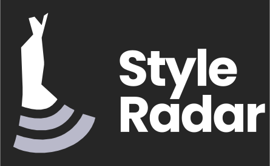
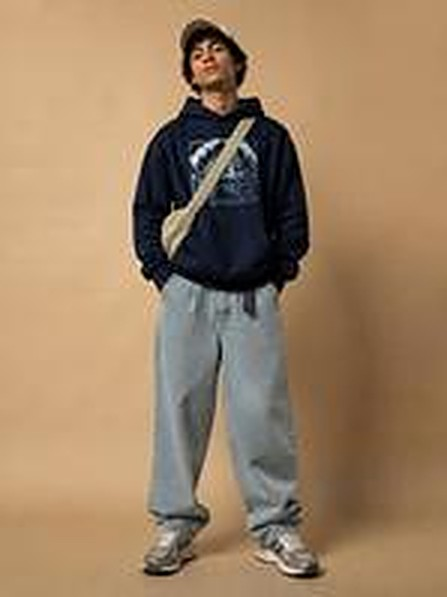
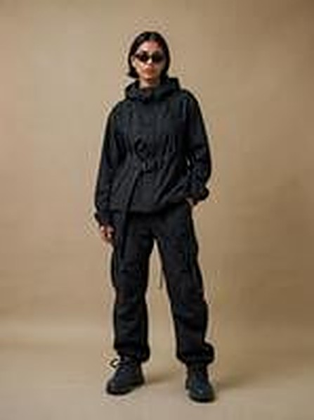
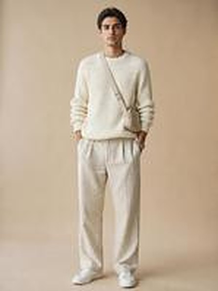

SERIE DOCUMENTAL / 01[Subtítulo o propósito]
[Introducción de 2 o 3 líneas, sin omitir rúbrica.]
Grafito + blanco / arena + lavanda / violeta.



Imágenes originales de assets/mascota/, sin reinterpretaciones.
[Contenido técnico completo. La plantilla organiza los párrafos pero no reemplaza información de la entrega.]
[Descripción y explicación de lo observado, del código existente o de una propuesta. Incluye fuentes y evidencia.]
[Explica el alcance comprobado y los pendientes sin declarar resultados inexistentes.]
Figura 01. [Descripción, fuente, fecha y versión.]
| CRITERIO | ESTADO | EVIDENCIA |
|---|---|---|
| [Condición 1] | [Estado] | [Archivo / URL] |
| [Condición 2] | [Estado] | [Archivo / URL] |
Diagramas, módulos, navegación, evidencia y alcance de la implementación.
Investigación, mercado, estrategia, métricas y piezas visuales.
Narrativa de producto, capturas, logros y conclusiones.
Criterios, capturas, enlaces y resultados verificados.
Usa solo los colores #262626, #FFFFFF, #E8DCCB, #B9B9CA, #48119A y la fuente Poppins. Las cinco mascotas oficiales son Antonia, Mateo, Aura, Nora y Tomás; conserva imágenes y proporciones. El formato Word derivado puede mostrar una fuente sustituta donde Poppins no esté instalada.
La plantilla está disponible para reutilización. Para dar por cumplido el criterio de adopción, hay que comprobar su uso real en arquitectura, marketing y presentación del equipo.